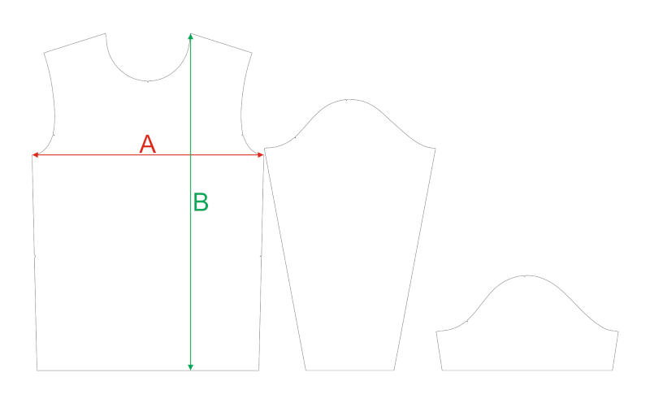

Ширина изделия
Измеряется по груди от бокового шва до бокового шва. Это не обхват тела: для примерного обхвата изделия умножьте A на 2.
Положите свою удобную футболку или лонгслив на ровную поверхность, расправьте ткань без натяжения и измерьте изделие. Так размер выбирается точнее, чем по абстрактному “S/M/L”.

Измеряется по груди от бокового шва до бокового шва. Это не обхват тела: для примерного обхвата изделия умножьте A на 2.
Измеряется вертикально от верхней точки плеча до низа изделия. Важна для посадки под рост, пояс и рюкзак.
Для футболок смотрим длину короткого рукава, для лонгсливов — длину длинного рукава. Если носите свободно, выбирайте размер с запасом.
Таблица подходит для футболок с коротким рукавом. Если собираете форму для команды, добавьте к размерам рост участников: так проще понять, где нужен запас по длине.
| Размер | Ростовка | A, см | B, см | Короткий рукав, см |
|---|---|---|---|---|
| 30 | 122 | 36 | 47 | 12,5 |
| 32 | 128 | 38 | 50 | 13 |
| 34 | 134 | 39,5 | 53 | 13,5 |
| 36 | 140 | 41 | 56 | 14 |
| 38 | 146 | 43 | 59 | 14,5 |
| 40 | 152 | 45,2 | 62,7 | 15,5 |
| 42 | 158 | 45,2 | 65,7 | 18,0 |
| 44 | 164 | 46,5 | 67,7 | 18,3 |
| 46 | 170 | 48,4 | 69,7 | 19,0 |
| 48 | 176 | 50,4 | 71,7 | 19,4 |
| 50 | 182 | 51,8 | 73,7 | 19,6 |
| 52 | 188 | 54,4 | 75,7 | 20,0 |
| 54 | 188 | 56,4 | 75,7 | 20,6 |
| 56 | 188 | 58,2 | 75,7 | 21,1 |
| 58 | 188 | 60 | 81,3 | 21,9 |
| 60 | — | 62 | 83,3 | 24 |
| 62 | — | 64,5 | 85,4 | 24,3 |
| 64 | — | 66,5 | 87,4 | 25,3 |
Для лонгслива используйте те же A и B, но ориентируйтесь на столбец с длинным рукавом. Если нужного размера нет в таблице, уточним его отдельно перед заказом.
| Размер | Ростовка | A, см | B, см | Длинный рукав, см |
|---|---|---|---|---|
| 40 | 152 | 45,2 | 62,7 | 59,2 |
| 42 | 158 | 45,2 | 65,7 | 60,6 |
| 44 | 164 | 46,5 | 67,7 | 62,1 |
| 46 | 170 | 48,4 | 69,7 | 63,8 |
| 48 | 176 | 50,4 | 71,7 | 65,3 |
| 50 | 182 | 51,8 | 73,7 | 66,8 |
| 52 | 188 | 54,4 | 75,7 | 68,1 |
| 54 | 188 | 56,4 | 75,7 | 69,7 |
| 56 | 188 | 58,2 | 75,7 | 71,1 |
| 58 | 188 | 60 | 81,3 | 73 |
| 60 | — | 62 | 83,3 | 74,5 |
Для бафов чаще выбираем формат перед заказом: взрослый, детский или комплектный. Если нужен точный размер, согласуем высоту и ширину под задачу.
| Формат | Кому подходит | Что уточнить перед заказом |
|---|---|---|
| Взрослый one size | Большинство взрослых участников, походные группы, клубы, забеги. | Размер готового бафа, ткань, высоту изделия и повтор принта. |
| Детский | Детские группы, семейные походы, подростковые команды. | Возраст или рост участников и отдельный размер партии. |
| В комплект к форме | Когда баф идёт вместе с футболкой или лонгсливом. | Связь с дизайном формы: цвета, логотипы, масштаб графики и расположение элементов. |
Чтобы не уточнять размеры в переписке по кругу, можно сразу прислать одну таблицу по участникам и короткий комментарий по посадке.
Футболка, лонгслив, баф или комплект. Для футболки и лонгслива используем разные столбцы длины рукава.
Имя или номер участника, размер по таблице, ростовка, желаемая посадка: обычная, свободная или ближе к телу.
A, B и длина рукава из таблицы. Если кто-то между размерами, добавьте комментарий “лучше свободнее” или “лучше ближе к телу”.
| Что указать | Пример | Зачем это нужно |
|---|---|---|
| Размер и ростовка | 48 / ростовка 176 | Чтобы выбрать правильную строку таблицы. |
| Мерки изделия | A 50,4 · B 71,7 · рукав 19,4 или 65,3 | Чтобы не перепутать короткий и длинный рукав. |
| Посадка | Свободно под термобельё / ближе к телу | Чтобы форма не получилась слишком тесной или слишком свободной. |
Размеры указаны по актуальной сетке Trekki. Если сомневаетесь, пришлите мерки удобной вещи — поможем выбрать размер.
Соберём размеры участников, проверим посадку по изделию и поможем оформить понятную заявку.